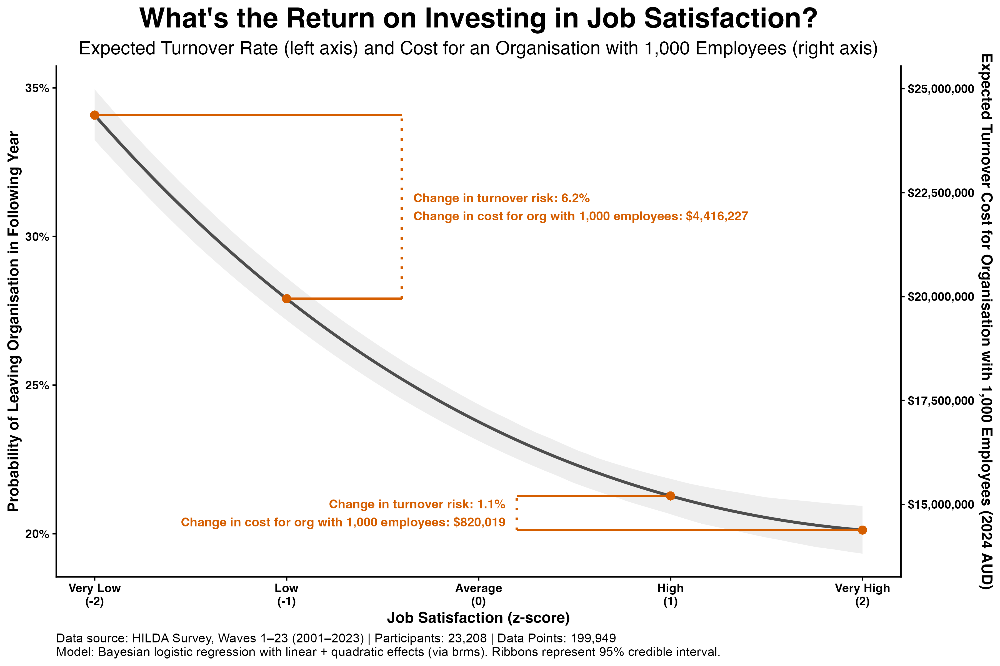

Leaders know that improving job satisfaction matters. We see it in discussions about 'quiet quitting', disengagement, and talent retention. But when budgets tighten, initiatives with clear financial returns get approved while investments in employee wellbeing often struggle to secure funding. This creates an important challenge: how do you prove the financial value of investing in your people?
One powerful way to quantify this return is through employee turnover costs. While turnover isn't the only outcome affected by job satisfaction, it provides a concrete, measurable financial impact that resonates in boardrooms and budget meetings.
What We Did
We examined the link between job satisfaction and turnover by analysing HILDA survey data (nearly 200,000 observations from 23,000+ workers, 2001–2023). We calculated the cost for a model organisation of 1,000 employees, assuming the cost of replacing an employee is 1x their annual salary (a common benchmark for recruitment, onboarding, and productivity loss).

The Impact is Non-Linear: The relationship isn't a straight line. The probability of an employee leaving drops fastest at the low end of the satisfaction scale and then flattens out.
The ROI is Highest For the Less Satisfied: This non-linearity has important implications for ROI.
- Lifting from "Very Low" to "Low": Reduces turnover risk by 6.2 percentage points. For our 1,000-employee org, this saves $4.4 million.
- Lifting from "High" to "Very High": Reduces turnover risk by only 1.1 percentage points. The saving is just $820,019.
What Does This Mean?
If your employees are satisfied, keep them satisfied. While pushing from high to very high satisfaction yields modest returns ($820k), allowing satisfaction to slip backwards becomes increasingly expensive.
- A drop from Average → Low costs $3 million.
- A drop from Low → Very Low costs $4.4 million. The financial cost accelerates as satisfaction declines.
If your employees are dissatisfied, intervene. This is where your investment generates the highest return. Moving employees out of the "very dissatisfied" zone provides a 5x greater return than investments made when satisfaction is already high.
These figures are for an organisation of just 1,000 employees, but they scale with organisation size. So a reduction in satisfaction in an organisation with 10,000 employees could cost as much as $44 million.
And this only captures turnover. When you factor in the productivity losses from presenteeism, absenteeism, and quiet quitting — all strongly linked to job satisfaction — the true financial impact is likely much higher.
So investing in job satisfaction isn't just good for employees. It's one of the most financially defensible investments an organisation can make.